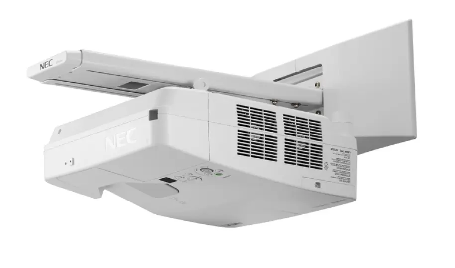

Серия UM
Ультракороткофокусные проекторы NEC, предназначены для использования в школах, университетах, а также в корпоративных переговорных комнатах. Проекторы формируют яркое и насыщенное изображение на экране, а за счет короткого фокуса предотвращают появление теней, затрудняющих считывание материала с экрана. Некоторые модели серии поддерживают работу в интерактивном режиме, существенно облегчающем проведение презентаций и лекций. Шум от проекторов UM не превышает 28dB, а значит лектору не приходится повышать голос.